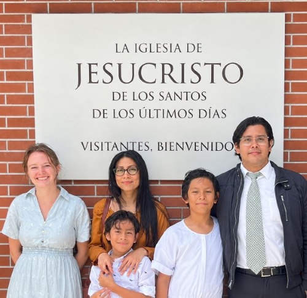

Jorge Alberto Ayala Sanchez | WDD 130

Hi Everyone! My name is Jorge Sanchez, and I’m from El Salvador. I love spending time with my family, learning new things, and finding ways to improve myself both personally and professionally. I have experience in administration, accounting, and property management, and I’m currently studying at BYU-Pathway. I feel very excited to learn about programming, web design, and development because these are completely new areas for me. I’m looking forward to discovering what I can create with these skills and how I can use them to solve problems and bring new ideas to life. I know I still have a lot to learn, but I enjoy challenges and believe that every new experience is an opportunity to grow.I also believe that with Jesus Christ's guidance, patience, and hard work, I can overcome challenges and achieve goals that may seem difficult at first. I'm excited to learn alongside all of you, share experiences, and see what we can accomplish throughout this course.